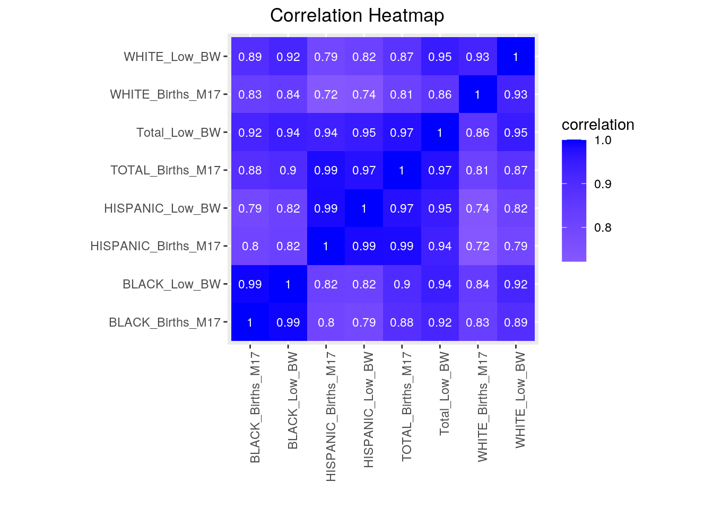
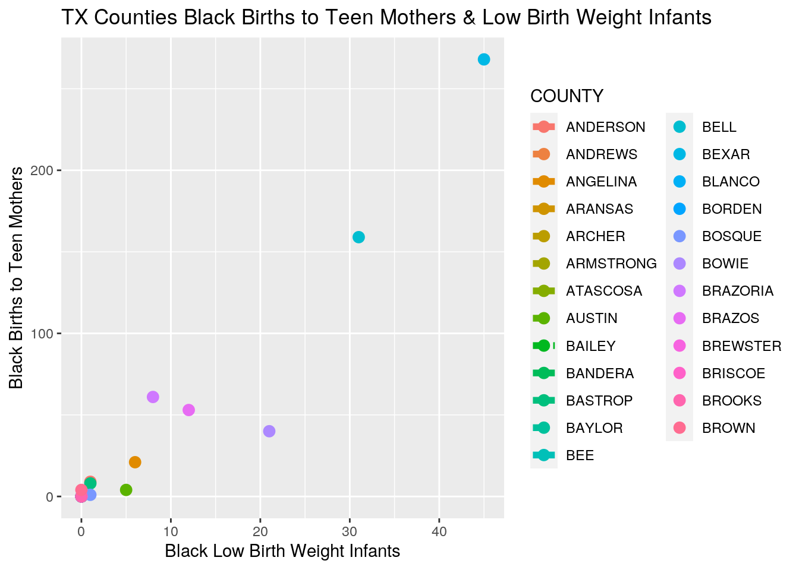
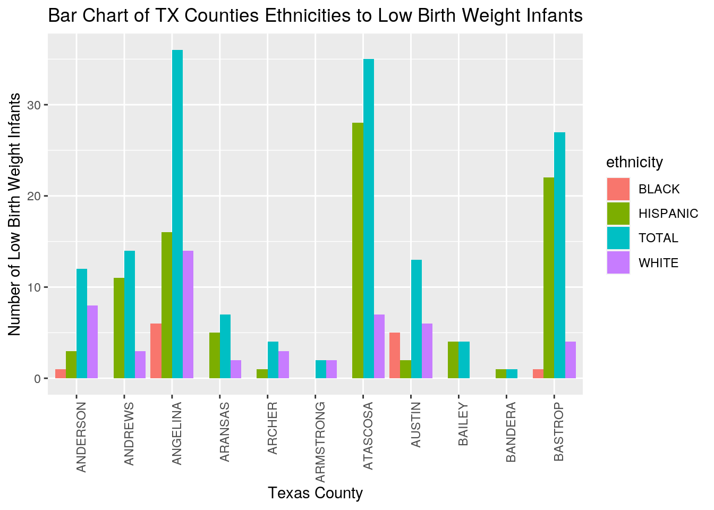
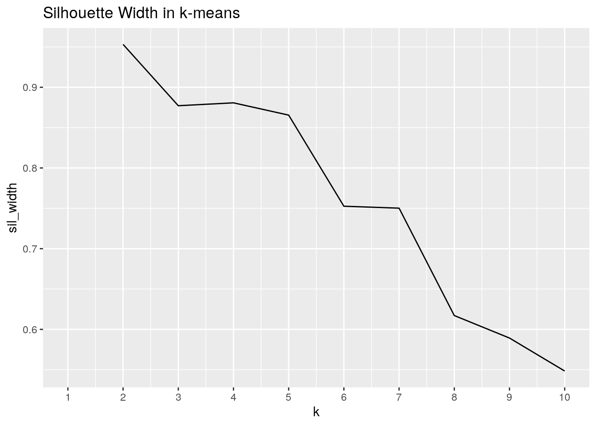
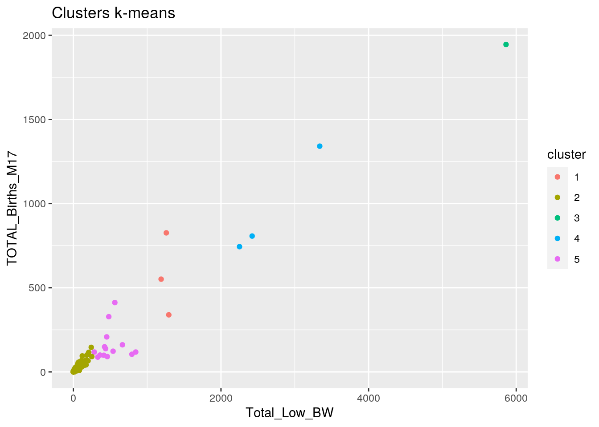
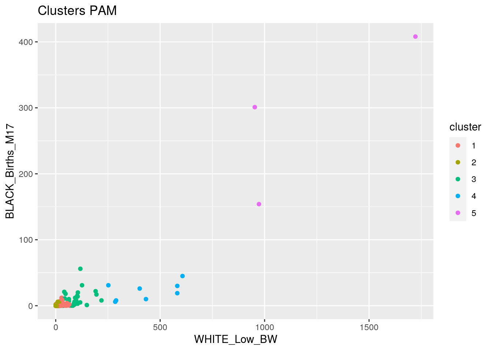

library(tidyverse)
lbwdata1<-read_csv("Texas Births to Mothers 17 Years of Age and Younger.csv")
bmydata1<-read_csv("Texas Low Birth Weight Infants.csv")
lbwdata1## # A tibble: 254 x 5
## COUNTY TOTAL_Births_M17 WHITE_Births_M17 BLACK_Births_M17 HISPANIC_Births_…
## <chr> <dbl> <dbl> <dbl> <dbl>
## 1 ANDERSON 12 8 1 3
## 2 ANDREWS 14 3 0 11
## 3 ANGELINA 36 14 6 16
## 4 ARANSAS 7 2 0 5
## 5 ARCHER 4 3 0 1
## 6 ARMSTRO… 2 2 0 0
## 7 ATASCOSA 35 7 0 28
## 8 AUSTIN 13 6 5 2
## 9 BAILEY 4 0 0 4
## 10 BANDERA 1 0 0 1
## # … with 244 more rowsbmydata1## # A tibble: 254 x 5
## COUNTY Total_Low_BW WHITE_Low_BW BLACK_Low_BW HISPANIC_Low_BW
## <chr> <dbl> <dbl> <dbl> <dbl>
## 1 ANDERSON 46 28 9 9
## 2 ANDREWS 20 7 0 13
## 3 ANGELINA 111 58 21 32
## 4 ARANSAS 31 18 0 13
## 5 ARCHER 2 2 0 0
## 6 ARMSTRONG 3 3 0 0
## 7 ATASCOSA 53 10 0 43
## 8 AUSTIN 27 15 4 8
## 9 BAILEY 8 1 0 7
## 10 BANDERA 17 10 0 7
## # … with 244 more rowsThe goal of my project was to find data that was meaningful to me and one that could help all counties across the state of Texas. The two datasets I aquired for my project were from the Texas Department of State Health Services. The 2013 datasets were about Low Birth Weight Infants and Births to Mothers 17 Years of Age and Younger per county in the state of Texas. Each dataset has the variables of the total number of births (for low weight and mothers 17 years of age or less), then divided into 3 categories of white, black, and hispanic. These were truly interesting to me because when I was in middle school, there were a lot of teen pregnancies which was really common in my area. I pulled this data from the exact year of my experience and hope to learn from my past and educate the present and future. I expect to see a correlation in counties with the most low birth weight infants to also have the highest births to teen pregnant mothers. Additionally, I expect to see the minority groups (black and hispanic) to have a larger amount of teen pregnancies with low child birth weight.
library(tidyverse)
lbwdata1 %>% pivot_longer(2:5) %>% separate(name,into=c("ethnicity","var","lowBW"), sep="_") %>% select(-var) %>% select(-lowBW) %>% rename(lowBW = value) ->widedatlbw
bmydata1 %>% pivot_longer(2:5) %>% separate(name,into=c("ethnicity","var","birthsM17"), sep="_") %>% select(-var) %>% select(-birthsM17) %>% rename(birthsM17 = value)->widedatbmy
widedatlbw## # A tibble: 1,016 x 3
## COUNTY ethnicity lowBW
## <chr> <chr> <dbl>
## 1 ANDERSON TOTAL 12
## 2 ANDERSON WHITE 8
## 3 ANDERSON BLACK 1
## 4 ANDERSON HISPANIC 3
## 5 ANDREWS TOTAL 14
## 6 ANDREWS WHITE 3
## 7 ANDREWS BLACK 0
## 8 ANDREWS HISPANIC 11
## 9 ANGELINA TOTAL 36
## 10 ANGELINA WHITE 14
## # … with 1,006 more rowswidedatbmy## # A tibble: 1,016 x 3
## COUNTY ethnicity birthsM17
## <chr> <chr> <dbl>
## 1 ANDERSON Total 46
## 2 ANDERSON WHITE 28
## 3 ANDERSON BLACK 9
## 4 ANDERSON HISPANIC 9
## 5 ANDREWS Total 20
## 6 ANDREWS WHITE 7
## 7 ANDREWS BLACK 0
## 8 ANDREWS HISPANIC 13
## 9 ANGELINA Total 111
## 10 ANGELINA WHITE 58
## # … with 1,006 more rowswidedatlbw %>% pivot_wider(names_from = "ethnicity",values_from="lowBW") ## # A tibble: 254 x 5
## COUNTY TOTAL WHITE BLACK HISPANIC
## <chr> <dbl> <dbl> <dbl> <dbl>
## 1 ANDERSON 12 8 1 3
## 2 ANDREWS 14 3 0 11
## 3 ANGELINA 36 14 6 16
## 4 ARANSAS 7 2 0 5
## 5 ARCHER 4 3 0 1
## 6 ARMSTRONG 2 2 0 0
## 7 ATASCOSA 35 7 0 28
## 8 AUSTIN 13 6 5 2
## 9 BAILEY 4 0 0 4
## 10 BANDERA 1 0 0 1
## # … with 244 more rowswidedatbmy %>% pivot_wider(names_from = "ethnicity",values_from="birthsM17") ## # A tibble: 254 x 5
## COUNTY Total WHITE BLACK HISPANIC
## <chr> <dbl> <dbl> <dbl> <dbl>
## 1 ANDERSON 46 28 9 9
## 2 ANDREWS 20 7 0 13
## 3 ANGELINA 111 58 21 32
## 4 ARANSAS 31 18 0 13
## 5 ARCHER 2 2 0 0
## 6 ARMSTRONG 3 3 0 0
## 7 ATASCOSA 53 10 0 43
## 8 AUSTIN 27 15 4 8
## 9 BAILEY 8 1 0 7
## 10 BANDERA 17 10 0 7
## # … with 244 more rowsIn this section, I used the datasets to pivot_longer and pivot_wider. Here, the pivot_longer was used to condense all the different ethnic columns into one single ethnic column. As we can see, the table now has total, white, black and hispanic all summarized in one column with each county and low birth weight/births to mothers 17 years of age or less, respectively. The next approach was to expand this table using the pivot_wider function to create a column for each ethnicity paired with its birth number column for its dataset. As we can see, each column now has it own title and is paired with its county and birth category.
lbwdata1 %>% full_join(bmydata1,by="COUNTY")-> joinalbwbmy
joinalbwbmy## # A tibble: 254 x 9
## COUNTY TOTAL_Births_M17 WHITE_Births_M17 BLACK_Births_M17 HISPANIC_Births…
## <chr> <dbl> <dbl> <dbl> <dbl>
## 1 ANDER… 12 8 1 3
## 2 ANDRE… 14 3 0 11
## 3 ANGEL… 36 14 6 16
## 4 ARANS… 7 2 0 5
## 5 ARCHER 4 3 0 1
## 6 ARMST… 2 2 0 0
## 7 ATASC… 35 7 0 28
## 8 AUSTIN 13 6 5 2
## 9 BAILEY 4 0 0 4
## 10 BANDE… 1 0 0 1
## # … with 244 more rows, and 4 more variables: Total_Low_BW <dbl>,
## # WHITE_Low_BW <dbl>, BLACK_Low_BW <dbl>, HISPANIC_Low_BW <dbl>nrow(joinalbwbmy)## [1] 254For this section, I merged the two dataset: Low Birth Weight Infants and Births to Mothers 17 Years of Age and Younger. Here the ID variable that was similar for the two datasets were County, thus when I used full_join, it was able to fully combine the two datasets. I used full join for this specific project because it retains the original data and did not drop any rows. Since there were no NA variables in this dataset, using full_join did not have an affect on the data, thus retaining the same number of rows for the two datasets we combined. If either dataset contained any NAs, then this would cause problems since we would have to remove some rows, which would lead to a reduced amount of data available for this study.
joinalbwbmy %>% filter(Total_Low_BW>=100 & TOTAL_Births_M17>=100)## # A tibble: 21 x 9
## COUNTY TOTAL_Births_M17 WHITE_Births_M17 BLACK_Births_M17 HISPANIC_Births…
## <chr> <dbl> <dbl> <dbl> <dbl>
## 1 BELL 123 39 31 53
## 2 BEXAR 807 67 45 695
## 3 CAMER… 412 29 3 380
## 4 COLLIN 118 42 19 57
## 5 DALLAS 1341 99 301 941
## 6 DENTON 161 53 10 98
## 7 ECTOR 146 19 2 125
## 8 EL PA… 551 15 1 535
## 9 FORT … 105 14 26 65
## 10 HARRIS 1945 197 408 1340
## # … with 11 more rows, and 4 more variables: Total_Low_BW <dbl>,
## # WHITE_Low_BW <dbl>, BLACK_Low_BW <dbl>, HISPANIC_Low_BW <dbl>joinalbwbmy %>% select(COUNTY,starts_with("B"),starts_with("H"))## # A tibble: 254 x 5
## COUNTY BLACK_Births_M17 BLACK_Low_BW HISPANIC_Births_M17 HISPANIC_Low_BW
## <chr> <dbl> <dbl> <dbl> <dbl>
## 1 ANDERSON 1 9 3 9
## 2 ANDREWS 0 0 11 13
## 3 ANGELINA 6 21 16 32
## 4 ARANSAS 0 0 5 13
## 5 ARCHER 0 0 1 0
## 6 ARMSTRONG 0 0 0 0
## 7 ATASCOSA 0 0 28 43
## 8 AUSTIN 5 4 2 8
## 9 BAILEY 0 0 4 7
## 10 BANDERA 0 0 1 7
## # … with 244 more rowsjoinalbwbmy %>% arrange(desc(TOTAL_Births_M17),desc(Total_Low_BW))## # A tibble: 254 x 9
## COUNTY TOTAL_Births_M17 WHITE_Births_M17 BLACK_Births_M17 HISPANIC_Births…
## <chr> <dbl> <dbl> <dbl> <dbl>
## 1 HARRIS 1945 197 408 1340
## 2 DALLAS 1341 99 301 941
## 3 HIDAL… 826 4 0 822
## 4 BEXAR 807 67 45 695
## 5 TARRA… 744 170 154 420
## 6 EL PA… 551 15 1 535
## 7 CAMER… 412 29 3 380
## 8 TRAVIS 339 30 30 279
## 9 WEBB 328 1 0 327
## 10 NUECES 208 32 5 171
## # … with 244 more rows, and 4 more variables: Total_Low_BW <dbl>,
## # WHITE_Low_BW <dbl>, BLACK_Low_BW <dbl>, HISPANIC_Low_BW <dbl>joinalbwbmy %>% pivot_longer(7:9) %>% select (1,7,8) %>% separate(name,into=c("ethnicity","var","birthsM17"), sep="_") %>% unite(var,birthsM17, col = "Births_Category") %>%
rename(births = value) %>% group_by(ethnicity) %>% summarize(mean_lowBW=mean(births,na.rm=T),sd_lowBW=sd(births,na.rm=T))## # A tibble: 3 x 3
## ethnicity mean_lowBW sd_lowBW
## <chr> <dbl> <dbl>
## 1 BLACK 23.0 131.
## 2 HISPANIC 55.9 232.
## 3 WHITE 47.8 157.joinalbwbmy %>% mutate(TeenMomBirthsPerLowBW=TOTAL_Births_M17/Total_Low_BW)## # A tibble: 254 x 10
## COUNTY TOTAL_Births_M17 WHITE_Births_M17 BLACK_Births_M17 HISPANIC_Births…
## <chr> <dbl> <dbl> <dbl> <dbl>
## 1 ANDER… 12 8 1 3
## 2 ANDRE… 14 3 0 11
## 3 ANGEL… 36 14 6 16
## 4 ARANS… 7 2 0 5
## 5 ARCHER 4 3 0 1
## 6 ARMST… 2 2 0 0
## 7 ATASC… 35 7 0 28
## 8 AUSTIN 13 6 5 2
## 9 BAILEY 4 0 0 4
## 10 BANDE… 1 0 0 1
## # … with 244 more rows, and 5 more variables: Total_Low_BW <dbl>,
## # WHITE_Low_BW <dbl>, BLACK_Low_BW <dbl>, HISPANIC_Low_BW <dbl>,
## # TeenMomBirthsPerLowBW <dbl>joinalbwbmy %>% summarise(mean(Total_Low_BW,na.rm=T))## # A tibble: 1 x 1
## `mean(Total_Low_BW, na.rm = T)`
## <dbl>
## 1 127.joinalbwbmy %>% summarize_if(is.numeric,mean)## # A tibble: 1 x 8
## TOTAL_Births_M17 WHITE_Births_M17 BLACK_Births_M17 HISPANIC_Births…
## <dbl> <dbl> <dbl> <dbl>
## 1 48.2 8.46 5.91 33.8
## # … with 4 more variables: Total_Low_BW <dbl>, WHITE_Low_BW <dbl>,
## # BLACK_Low_BW <dbl>, HISPANIC_Low_BW <dbl>joinalbwbmy %>% summarize_if(is.numeric,sd)## # A tibble: 1 x 8
## TOTAL_Births_M17 WHITE_Births_M17 BLACK_Births_M17 HISPANIC_Births…
## <dbl> <dbl> <dbl> <dbl>
## 1 177. 19.8 33.6 133.
## # … with 4 more variables: Total_Low_BW <dbl>, WHITE_Low_BW <dbl>,
## # BLACK_Low_BW <dbl>, HISPANIC_Low_BW <dbl>joinalbwbmy %>% summarize_if(is.numeric,var)## # A tibble: 1 x 8
## TOTAL_Births_M17 WHITE_Births_M17 BLACK_Births_M17 HISPANIC_Births…
## <dbl> <dbl> <dbl> <dbl>
## 1 31321. 394. 1126. 17727.
## # … with 4 more variables: Total_Low_BW <dbl>, WHITE_Low_BW <dbl>,
## # BLACK_Low_BW <dbl>, HISPANIC_Low_BW <dbl>joinalbwbmy %>% summarize(n=n())## # A tibble: 1 x 1
## n
## <int>
## 1 254joinalbwbmy %>% summarize_if(is.numeric, list(Q1=quantile), probs=0.25)## # A tibble: 1 x 8
## TOTAL_Births_M1… WHITE_Births_M1… BLACK_Births_M1… HISPANIC_Births…
## <dbl> <dbl> <dbl> <dbl>
## 1 3 0.25 0 1
## # … with 4 more variables: Total_Low_BW_Q1 <dbl>, WHITE_Low_BW_Q1 <dbl>,
## # BLACK_Low_BW_Q1 <dbl>, HISPANIC_Low_BW_Q1 <dbl>joinalbwbmy %>% summarize_if(is.numeric, list(Q3=quantile), probs=0.75)## # A tibble: 1 x 8
## TOTAL_Births_M1… WHITE_Births_M1… BLACK_Births_M1… HISPANIC_Births…
## <dbl> <dbl> <dbl> <dbl>
## 1 22.8 7.75 2 14
## # … with 4 more variables: Total_Low_BW_Q3 <dbl>, WHITE_Low_BW_Q3 <dbl>,
## # BLACK_Low_BW_Q3 <dbl>, HISPANIC_Low_BW_Q3 <dbl>joinalbwbmy %>% summarize_if(is.numeric,min)## # A tibble: 1 x 8
## TOTAL_Births_M17 WHITE_Births_M17 BLACK_Births_M17 HISPANIC_Births…
## <dbl> <dbl> <dbl> <dbl>
## 1 0 0 0 0
## # … with 4 more variables: Total_Low_BW <dbl>, WHITE_Low_BW <dbl>,
## # BLACK_Low_BW <dbl>, HISPANIC_Low_BW <dbl>joinalbwbmy %>% summarize_if(is.numeric,max)## # A tibble: 1 x 8
## TOTAL_Births_M17 WHITE_Births_M17 BLACK_Births_M17 HISPANIC_Births…
## <dbl> <dbl> <dbl> <dbl>
## 1 1945 197 408 1340
## # … with 4 more variables: Total_Low_BW <dbl>, WHITE_Low_BW <dbl>,
## # BLACK_Low_BW <dbl>, HISPANIC_Low_BW <dbl>joinalbwbmy %>% summarize_all(n_distinct)## # A tibble: 1 x 9
## COUNTY TOTAL_Births_M17 WHITE_Births_M17 BLACK_Births_M17 HISPANIC_Births…
## <int> <int> <int> <int> <int>
## 1 254 72 40 29 57
## # … with 4 more variables: Total_Low_BW <int>, WHITE_Low_BW <int>,
## # BLACK_Low_BW <int>, HISPANIC_Low_BW <int>joinalbwbmy %>% select_if(is.numeric) %>% cor(use="pair")## TOTAL_Births_M17 WHITE_Births_M17 BLACK_Births_M17
## TOTAL_Births_M17 1.0000000 0.8126752 0.8848161
## WHITE_Births_M17 0.8126752 1.0000000 0.8291615
## BLACK_Births_M17 0.8848161 0.8291615 1.0000000
## HISPANIC_Births_M17 0.9850833 0.7221840 0.8004869
## Total_Low_BW 0.9746852 0.8642783 0.9186814
## WHITE_Low_BW 0.8700473 0.9260549 0.8890968
## BLACK_Low_BW 0.8991119 0.8382883 0.9938932
## HISPANIC_Low_BW 0.9732555 0.7352396 0.7878245
## HISPANIC_Births_M17 Total_Low_BW WHITE_Low_BW BLACK_Low_BW
## TOTAL_Births_M17 0.9850833 0.9746852 0.8700473 0.8991119
## WHITE_Births_M17 0.7221840 0.8642783 0.9260549 0.8382883
## BLACK_Births_M17 0.8004869 0.9186814 0.8890968 0.9938932
## HISPANIC_Births_M17 1.0000000 0.9352054 0.7943630 0.8196681
## Total_Low_BW 0.9352054 1.0000000 0.9480406 0.9440436
## WHITE_Low_BW 0.7943630 0.9480406 1.0000000 0.9192658
## BLACK_Low_BW 0.8196681 0.9440436 0.9192658 1.0000000
## HISPANIC_Low_BW 0.9855230 0.9488509 0.8173395 0.8178297
## HISPANIC_Low_BW
## TOTAL_Births_M17 0.9732555
## WHITE_Births_M17 0.7352396
## BLACK_Births_M17 0.7878245
## HISPANIC_Births_M17 0.9855230
## Total_Low_BW 0.9488509
## WHITE_Low_BW 0.8173395
## BLACK_Low_BW 0.8178297
## HISPANIC_Low_BW 1.0000000joinalbwbmy %>% mutate(TOTAL_Births_M17_Cat= case_when(TOTAL_Births_M17>500~"high",
TOTAL_Births_M17<500 & 100<=TOTAL_Births_M17~"med",
TOTAL_Births_M17<100~"low")) %>% group_by(TOTAL_Births_M17_Cat) %>% summarize(number_rows=n())## # A tibble: 3 x 2
## TOTAL_Births_M17_Cat number_rows
## <chr> <int>
## 1 high 6
## 2 low 233
## 3 med 15joinalbwbmy %>% mutate(Total_Low_BW_Cat= case_when(Total_Low_BW>500~"high",
Total_Low_BW<500 & 100<=Total_Low_BW~"med",
Total_Low_BW<100~"low")) %>% group_by(Total_Low_BW_Cat) %>% summarize(number_rows=n())## # A tibble: 3 x 2
## Total_Low_BW_Cat number_rows
## <chr> <int>
## 1 high 12
## 2 low 212
## 3 med 30For this section, I used all six core dplyr functions to generate summary statistics. I used filter which helps to choose certain rows of interest. For this example, I extracted rows that only contained 100 or more of low birth weighted infants and with births to mothers younger than 17 per county, thus finding 21 counties that satisfied this function. I used select which helps choose certain columns of interest. For this example, I extracted COUNTY, and all rows that started with “B” and “H”, which resulted in obtaining COUNTY, BLACK and HISPANIC columns. I used arrange which sorts the rows. Here, I arranged both Total Low Birth Weighted infants and Total births to mothers younger than 17 in descending order, thus letting us discover that Harris County had the greatest numbers of these types of births in both. I used group_by to designate groups of data. I grouped them by ethnicity and summarized the mean and standard deviation of all three groups. It was interesting to see that the Black ethnic group had the lowest number of infants born underweight, but then the standard deviations disproves this assumption since it is much larger and overlaps each of the three ethnic categories. I used mutate to make a new column and calculated the ratio between the number of infants born to 17 and younger mothers to the number of infants born underweight per county. I used summarize to get the summary statistic of the mean for the number of infants born underweight per county, which was 126.67. Furthermore, I summarized all my data using mean, sd, var, n, quantile, min, max, n_distinct, and cor. These findings were the most interesting! I found that Hispanics had the highest mean of births to teenage mothers as well as having the highest mean for low birth weights of infants! This was shocking to find since Hispanics are only 31% percent of the entire population in Texas. This supports my hypothesis that minorities are higher in these categories. Additionally, I found out that after grouping by two categorical variables that majority of the counties had “low” numbers of low birth weights and low numbers of births to teen mothers. It appeared from the data that the higher populations had higher numbers of both categories which makes sense since we did not account for population size per 1000 and scaled because that was not included in the data.
cormat<-joinalbwbmy %>% select_if(is.numeric) %>% cor(use="pair")
tidycor<- cormat %>% as.data.frame %>% rownames_to_column("var1") %>%
pivot_longer(-1,names_to="var2",values_to="correlation")
tidycor## # A tibble: 64 x 3
## var1 var2 correlation
## <chr> <chr> <dbl>
## 1 TOTAL_Births_M17 TOTAL_Births_M17 1
## 2 TOTAL_Births_M17 WHITE_Births_M17 0.813
## 3 TOTAL_Births_M17 BLACK_Births_M17 0.885
## 4 TOTAL_Births_M17 HISPANIC_Births_M17 0.985
## 5 TOTAL_Births_M17 Total_Low_BW 0.975
## 6 TOTAL_Births_M17 WHITE_Low_BW 0.870
## 7 TOTAL_Births_M17 BLACK_Low_BW 0.899
## 8 TOTAL_Births_M17 HISPANIC_Low_BW 0.973
## 9 WHITE_Births_M17 TOTAL_Births_M17 0.813
## 10 WHITE_Births_M17 WHITE_Births_M17 1
## # … with 54 more rowstidycor%>%ggplot(aes(var1,var2,fill=correlation))+ geom_tile()+
scale_fill_gradient2(low="red",mid="white",high="blue")+
geom_text(aes(label=round(correlation,2)),color = "white", size = 3)+ theme(axis.text.x = element_text(angle = 90, hjust=1))+ coord_fixed() + labs(title= " Correlation Heatmap", y="", x = "")
ggplot(head(joinalbwbmy,25),mapping=aes(x=BLACK_Births_M17,y=BLACK_Low_BW,color=COUNTY))+geom_point(size=3)+geom_line(aes(group=COUNTY,linetype=COUNTY),size=2)+
labs(title = "TX Counties Black Births to Teen Mothers & Low Birth Weight Infants",y="Black Births to Teen Mothers", x = "Black Low Birth Weight Infants")+scale_x_continuous(breaks=seq(0,100,10))
ggplot(head(widedatlbw,44),aes(COUNTY,lowBW,fill=ethnicity))+geom_bar(stat="summary",position="dodge")+
theme(axis.text.x=element_text(angle=90,hjust=1))+
labs(title = "Bar Chart of TX Counties Ethnicities to Low Birth Weight Infants",y="Number of Low Birth Weight Infants",
x = "Texas County")
In Figure 1, I created a correlation heatmap of the each ethnic group for the two categories: Low Infant Birth Weight and Births to Mothers 17 and younger. I was really surprised and excited to find that there was a strong correlation to all of the variables. We can see that there are relationships between the same AND different ethnic groups. However, we can see that on the right hand side of the correlation heatmap that the white population had a slightly lesser relationship as compared to the two minority groups. Perhaps, socioeconomic status was a confounding variable in the this study. This heatmap shows that there are strong,positive trends with the low birth weight and births from teenage mothers for all ethnic groups.
In the second figure, I created a 3 variable plot that showed how the black population in Texas counties had low birth weights and births to teen mothers. We can see a positive trend in the chart and that larger counties had more births, but nearly at the same proportion as the smaller counties. One really cool piece of data that I wish I had with this set would be the access/distance to a physician, since this could also be a result of people living in medical deserts in rural counties. I would love to follow up on this!
In Figure 3, it shows a side-by-side bar chart that shows the Texas counties for low birth weights per ethnic group and total. We can see that from this chart, that Hispanics have more underweight born infants… very interesting. Perhaps there are more Hispanics in these areas or other confounding variables. I was pleased to find that all three figures provided strong, positive relationships that helped us make to some conclusions as well as form questions for future studies.
#kMean
joinalbwbmy## # A tibble: 254 x 9
## COUNTY TOTAL_Births_M17 WHITE_Births_M17 BLACK_Births_M17 HISPANIC_Births…
## <chr> <dbl> <dbl> <dbl> <dbl>
## 1 ANDER… 12 8 1 3
## 2 ANDRE… 14 3 0 11
## 3 ANGEL… 36 14 6 16
## 4 ARANS… 7 2 0 5
## 5 ARCHER 4 3 0 1
## 6 ARMST… 2 2 0 0
## 7 ATASC… 35 7 0 28
## 8 AUSTIN 13 6 5 2
## 9 BAILEY 4 0 0 4
## 10 BANDE… 1 0 0 1
## # … with 244 more rows, and 4 more variables: Total_Low_BW <dbl>,
## # WHITE_Low_BW <dbl>, BLACK_Low_BW <dbl>, HISPANIC_Low_BW <dbl>joinalbwbmy %>% select(2,6)->clust_dat
kmeans1<-clust_dat %>% kmeans(5)
kmeans1## K-means clustering with 5 clusters of sizes 3, 233, 1, 3, 14
##
## Cluster means:
## TOTAL_Births_M17 Total_Low_BW
## 1 572.00000 1247.00000
## 2 14.82403 32.27039
## 3 1945.00000 5862.00000
## 4 964.00000 2670.33333
## 5 159.85714 503.00000
##
## Clustering vector:
## [1] 2 2 2 2 2 2 2 2 2 2 2 2 2 5 4 2 2 2 2 5 2 2 2 2 2 2 2 2 2 2 5 2 2 2 2 2 2
## [38] 2 2 2 2 2 5 2 2 2 2 2 2 2 2 2 2 2 2 2 4 2 2 2 5 2 2 2 2 2 2 2 2 2 1 2 2 2
## [75] 2 2 2 2 5 2 2 2 2 5 2 2 2 2 2 2 2 2 2 2 2 2 2 2 2 2 3 2 2 2 2 2 2 1 2 2 2
## [112] 2 2 2 2 2 2 2 2 2 2 2 5 2 2 2 2 2 2 2 2 2 2 2 2 2 2 2 2 2 2 2 2 2 2 2 2 2
## [149] 2 2 2 5 2 2 5 2 2 2 2 2 2 2 2 2 2 2 2 2 2 5 2 2 2 2 2 2 2 5 2 2 2 2 2 2 2
## [186] 2 2 2 2 2 2 2 2 2 2 2 2 2 2 2 2 2 2 2 2 2 2 2 2 2 2 2 2 2 2 2 2 2 2 4 2 2
## [223] 2 2 2 2 1 2 2 2 2 2 2 2 2 2 2 2 2 5 2 2 2 2 2 5 2 2 2 2 2 2 2 2
##
## Within cluster sum of squares by cluster:
## [1] 124870.0 563865.8 0.0 898466.7 474003.7
## (between_SS / total_SS = 97.0 %)
##
## Available components:
##
## [1] "cluster" "centers" "totss" "withinss" "tot.withinss"
## [6] "betweenss" "size" "iter" "ifault"library(cluster)
sil_width<-vector()
for(i in 2:10){
kms <- kmeans(clust_dat,centers=i)
sil <- silhouette(kms$cluster,dist(clust_dat))
sil_width[i]<-mean(sil[,3])
}
ggplot()+geom_line(aes(x=1:10,y=sil_width))+scale_x_continuous(name="k",breaks=1:10)+ labs(title="Silhouette Width in k-means")## Warning: Removed 1 row(s) containing missing values (geom_path).
kmeansclust<-clust_dat %>% mutate(cluster=as.factor(kmeans1$cluster))
kmeansclust %>% ggplot(aes(Total_Low_BW,TOTAL_Births_M17,color=cluster))+geom_point()+labs(title="Clusters k-means")
#PAM
joinalbwbmy## # A tibble: 254 x 9
## COUNTY TOTAL_Births_M17 WHITE_Births_M17 BLACK_Births_M17 HISPANIC_Births…
## <chr> <dbl> <dbl> <dbl> <dbl>
## 1 ANDER… 12 8 1 3
## 2 ANDRE… 14 3 0 11
## 3 ANGEL… 36 14 6 16
## 4 ARANS… 7 2 0 5
## 5 ARCHER 4 3 0 1
## 6 ARMST… 2 2 0 0
## 7 ATASC… 35 7 0 28
## 8 AUSTIN 13 6 5 2
## 9 BAILEY 4 0 0 4
## 10 BANDE… 1 0 0 1
## # … with 244 more rows, and 4 more variables: Total_Low_BW <dbl>,
## # WHITE_Low_BW <dbl>, BLACK_Low_BW <dbl>, HISPANIC_Low_BW <dbl>joinalbwbmy %>% select(-COUNTY,-TOTAL_Births_M17,-HISPANIC_Births_M17,-Total_Low_BW,-HISPANIC_Low_BW)->clust_dat1
clust_dat1## # A tibble: 254 x 4
## WHITE_Births_M17 BLACK_Births_M17 WHITE_Low_BW BLACK_Low_BW
## <dbl> <dbl> <dbl> <dbl>
## 1 8 1 28 9
## 2 3 0 7 0
## 3 14 6 58 21
## 4 2 0 18 0
## 5 3 0 2 0
## 6 2 0 3 0
## 7 7 0 10 0
## 8 6 5 15 4
## 9 0 0 1 0
## 10 0 0 10 0
## # … with 244 more rowspam3<-clust_dat1 %>% scale %>% pam(5)
pam3## Medoids:
## ID WHITE_Births_M17 BLACK_Births_M17 WHITE_Low_BW BLACK_Low_BW
## [1,] 114 -0.02300889 -0.1464181 -0.1510655 -0.16730035
## [2,] 128 -0.37567968 -0.1762180 -0.2782681 -0.17491173
## [3,] 165 0.63195114 -0.0570186 0.2559826 -0.05312977
## [4,] 61 2.24416044 0.1217805 2.4438663 0.49488901
## [5,] 57 4.56171131 8.7935345 5.7574925 8.25848851
## Clustering vector:
## [1] 1 2 3 2 2 2 1 1 2 2 1 2 2 4 4 2 2 2 3 3 3 2 2 2 1 2 1 2 2 2 3 2 2 1 2 1 1
## [38] 2 2 2 2 2 4 2 2 1 2 2 1 1 2 2 2 2 2 2 5 2 2 2 4 2 2 2 2 2 1 3 2 3 3 1 2 2
## [75] 2 2 2 2 4 2 1 2 2 3 2 2 2 2 2 1 3 3 1 1 2 2 2 2 2 1 5 1 2 2 1 2 3 1 1 2 3
## [112] 1 2 1 2 3 1 2 1 2 1 2 3 2 2 3 2 2 3 2 2 2 1 2 2 2 2 2 3 2 2 2 2 2 1 3 1 2
## [149] 2 2 2 3 2 2 3 2 2 2 2 2 2 2 2 2 3 2 2 2 1 4 1 2 2 1 1 2 2 3 2 2 3 1 2 3 2
## [186] 2 1 3 2 2 3 2 2 2 2 2 2 1 1 2 1 2 2 1 1 2 2 2 2 2 2 3 2 2 2 2 2 2 2 5 3 2
## [223] 2 2 1 1 4 1 1 1 2 2 2 1 1 1 2 2 2 2 2 2 3 2 2 4 2 2 1 1 2 1 2 2
## Objective function:
## build swap
## 0.2656982 0.2545115
##
## Available components:
## [1] "medoids" "id.med" "clustering" "objective" "isolation"
## [6] "clusinfo" "silinfo" "diss" "call" "data"final1<-joinalbwbmy %>% mutate(cluster=as.factor(pam3$clustering))
ggplot(final1,aes(WHITE_Low_BW,BLACK_Births_M17,color=cluster))+geom_point()+labs(title="Clusters PAM")
joinalbwbmy %>% slice(pam3$id.med)## # A tibble: 5 x 9
## COUNTY TOTAL_Births_M17 WHITE_Births_M17 BLACK_Births_M17 HISPANIC_Births…
## <chr> <dbl> <dbl> <dbl> <dbl>
## 1 HOWARD 23 8 1 14
## 2 KARNES 6 1 0 5
## 3 MIDLA… 101 21 4 76
## 4 DENTON 161 53 10 98
## 5 DALLAS 1341 99 301 941
## # … with 4 more variables: Total_Low_BW <dbl>, WHITE_Low_BW <dbl>,
## # BLACK_Low_BW <dbl>, HISPANIC_Low_BW <dbl>pam3$silinfo$avg.width## [1] 0.5628459library(tidyverse)
library(plotly)
final1 %>% plot_ly(x=~WHITE_Low_BW,y=~BLACK_Births_M17,z=~WHITE_Births_M17, color=~cluster,type="scatter3d", mode="markers")## Warning: `arrange_()` was deprecated in dplyr 0.7.0.
## Please use `arrange()` instead.
## See vignette('programming') for more helpecho = FALSE parameter was added to the code chunk to prevent printing of the R code that generated the plot.
For the last section of this report, I tasked to conduct a dimensional reduction. I used conducted a k-means clustering. First, I selected my variables of interest and needed to determine the number of clusters. I first started off with k=2,which gave me two clusters; however, that was just with the Within Cluster Sums of Squares (WSS). In order for a better analysis, I picked the amount of clusters by using a silhouette width, which includes both WSS and Between Cluster Sums of Squares (BSS). This was very effective since it can interpret both in one test. I created a loop that tested the k-means between 2 and 10 and took those numbers with the silhouette width and averages of those widths. I found that k=2 was the highest average silhouette width, but I went with k=5 clusters since it was still very high (~0.83) and produced the best clusters for this specific analysis. K-means is very sensitive to outliers, so I then proceeded with this investigation by using a Partitioning around Medoids (PAM), which is better for this investigation and for multiple variables, numeric and categorical. I selected k for my datapoints to be the initial starting cluster then repeated again after a new central observation centralized the clusters. I compared to see the how the ethnic groups (White and Black) were plotted for the number of underweight born infants and the number of births to teenage mothers. We can see from our data, that cluster 5 has the highest birth numbers for birth of these clusters. From the 2-D figure, we plotted each cluster and did not find too much of a difference between our clusters from k-means, but we can see that the PAM clusters are more defined and centralized in the lower left hand corner as compared to the k-means chart. Clusters 1, 2, 3 appear to have the lowest number of births to underweight and teen mothers in their counties. One super interesting find was when I calculated the final medoids for PAM, which produced the counties for the five categories (1-5) were Howard, Karnes, Midland, Denton, Dallas, respectively. From our outside knowledge, we can conclude that these clusters are centralizing on these counties and are similar to counties/demographics of those areas. Lastly, from our 3-D model, we obtained a Goodness of Fit silhouette width of 0.56 for the 5 clusters, which means it is a reasonable cluster structure.